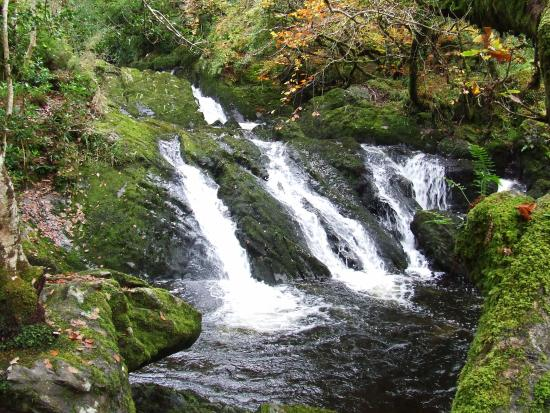

I enjoy going to the Mardyke Arena gym several times during the week, and I also go on walks in Glengarriff Nature Reserve whilst at home during the weekends. I enjoy watching all sports, and I have attended the Irish Open Golf tournament with my dad on many occasions in locations such as Fota and Killarney.
I enjoy listening to music and I use the online streaming service Spotify on a daily basis. I have also attended many concerts including Coldplay, Ed Sheeran and The Weeknd.
I have played the piano for seven years and I completed my RIAM Grade 8 Pianoforte exam last year. I play pieces by a wide-range of composers from different genres, but my favourite is the Italian composer Ludovico Einaudi and his contemporary classic works such as 'Elegy for the Arctic' and 'Divenire'.